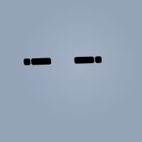

OrchestratorLaboratorio virtual para la simulación
y análisis de paradigmas de decisión
Agentes inteligentes · Fase 2 — Infraestructura de simulación y análisis
Contenidos
- 01Motivación y problemade una propuesta abierta a un sistema observable
- 02Visión generallas dos fases, el contrato fino y una demo en marcha
- 03Estado del arte y objetivossobre qué se construye · seis objetivos
- 04Diseño y arquitecturacapas · dominio 2D · agentes · Knowledge Backbone
- 05Desarrollo asistido por agentesun nuevo bucle · reparto de responsabilidades
- 06Verificación y evaluaciónpruebas como contrato · LLM-as-a-judge · dos casos reales
- 07Conclusioneslo que queda y por dónde seguir
Un problema abierto, iterado entre tres
Idea de Eduardo Sánchez Vila a partir de un TFM previo. A mi compañero Pablo y a mí se nos planteó sin alcance cerrado.
Convertir la propuesta de investigación en algo que se ejecuta, se observa y se audita — con el alcance y la arquitectura repartidos en dos fases.
Dos fases, una frontera fina
Lenguaje natural → modelo Python ejecutable.
Researcher · Reasoner · Builder
Ejecutar · observar · analizar · informar · recordar.
Architect · Tracker · Analyst · Reporter
class DecisionModel(Protocol):
def decide(self, perception: dict) -> Action: ...
def update(self, action, reward, new_perception): ...
def get_state(self) -> dict: ...Integración por duck typing: tres métodos, cero acoplamiento. Sin herencia ni dependencias estáticas — ambas fases evolucionan por separado, sin coordinar releases.
Sobre qué se construye
Un modelo no solo describe un mecanismo: lo ejecuta y deja ver sus patrones. Y la validación no acaba cuando compila.
Epstein · Railsback & Grimm · Sargent (V&V)
Roles especializados en orden canónico, frente al agente único que todo lo hace y nada deja auditar.
MetaGPT · Guo et al.
RAG denso + BM25 disperso sobre un grafo de conocimiento explícito.
Lewis (RAG) · GraphRAG · Hogan
Razonar y actuar con tool calls auditables; agentes que programan sobre repos reales.
ReAct · SWE-bench
La aportación no es una técnica nueva, sino combinar estas ideas en una infraestructura concreta — cooperativa, centralizada y por etapas (Cooperative · Centralized · Layered).
Seis objetivos específicos
No estaban fijados de antemano: crecieron con cada iteración de diseño.
Generar la especificación del entorno desde lenguaje natural.
Ejecutar modelos sin acoplamiento, incluso varios a la vez.
Registrar el comportamiento de forma estructurada.
Analizar patrones comportamiento–objetivo.
Generar un informe PDF reproducible.
Persistir memorias reutilizables entre experimentos.
Una arquitectura por capas
Una rejilla 2D común
El entorno (Environment) — una rejilla de tamaño fijo (ancho × alto) donde viven los recursos que el agente busca.
El cuerpo (Agent) — quién y dónde: posición en la rejilla, energía e historia.
La política (DecisionModel) — cómo decide, separada del cuerpo.
Reglas del entorno y eventos inmutables — la frontera compartida con la Fase 1.
El Orchestrator conduce a los demás
Un único coordinador decide el orden, pre-carga el contexto y controla el presupuesto. Los cuatro agentes solo transforman.
- Secuencia canónica — un orden fijo de tool calls; el LLM solo elige las desviaciones.
- Pre-recupera contexto — consulta el Knowledge Backbone antes de despachar a cada agente.
- Difiere la persistencia — controla presupuesto y ventana de contexto.
- Observabilidad en vivo — transmite por WebSocket, sin polling.
Cuatro agentes, cuatro cambios de representación
Cuatro cambios de representación encadenados: del lenguaje al entorno, del entorno a los datos, de los datos al informe.
Knowledge Backbone
Una consulta recorre toda la memoria
«drive», «homeostasis»
Rangel 2013 · DDM-v2
Los hechos del run, sin ambigüedad: modelo, caso, paso y recompensa.
Los postulados y su procedencia: contra qué teoría se contrasta lo observado.
Los entregables ya generados, servidos por URL: informes y figuras.
El Orchestrator funde significado, hechos exactos, dominio y artefactos en un solo contexto — Reciprocal Rank Fusion, sin entrenar nada.
Un nuevo bucle de desarrollo
Implementar deja de ser lo caro; especificar y verificar pasan al centro. Cada tarea es un contrato verificable.
Quién decide, quién implementa
Alcance, contratos de integración, diseño visual, prioridades y aceptación final.
Módulos acotados, pruebas, migraciones, refactores y depuración local — cuando el contrato fija el comportamiento.
Ya no es no llegar a escribir una pieza, sino aceptar una pieza plausible sin comprobar si respeta el sistema. El diff se revisa siempre contra la tarea: un cambio puede compilar y aun así rechazarse por ampliar el alcance o meter una abstracción que nadie usa.
Codex → backend · persistencia · pruebas · Claude Code → frontend · interacción
Verificar el desarrollo, evaluar el sistema
Si implementar deja de ser lo caro, el problema se desplaza: ¿qué garantiza que lo generado es correcto? — en dos momentos: mientras construyo y sobre el resultado final.
Pruebas como contrato — pytest + Playwright; sin prueba no está terminado, compuerta de CI en cada push.
Revisión combinada — diff humano + subagentes de alta confianza. Enfocan, no reemplazan.
Verificación en vivo — la interfaz debe poder usarse en el navegador antes de aceptarse.
Tres familias — código (binario) · juez LLM (salidas abiertas) · revisión humana.
Verdad = datos, no teoría — la vara son las trayectorias; rúbrica de 6 criterios.
Evaluado ≠ evaluador — el lab razona con Claude; el juez es Codex, de otra familia.
6 paradigmas · 8×8 · 360 eventos · 15 consumos
4 paradigmas · 10×10 · 199 eventos · 7 consumos
¿Qué evalúa el juez?
La vara de medir son las trayectorias de la simulación, no los papers: se juzga la fidelidad de la observación, no si la teoría acierta. Juez externo Codex —de otra familia— con una rúbrica de 6 criterios, uno por etapa del lab.
¿El env_spec es coherente con el caso y permite observar el comportamiento?
¿Las trayectorias y eventos reflejan la simulación? Tripleta joinable · determinismo.
¿Los patrones están anclados en las trayectorias, sin inventar?
¿El PDF es fiel a los datos, sin cifras alucinadas? ¿Real o fallback?
Errores, fallos de etapa y determinismo de principio a fin.
Síntesis de los cinco y puntuación /100, con evidencia citada.
Lo aprendido
- La forma de conectar, más que la pieza. Contratos finos entre componentes que evolucionan a ritmos distintos.
- Centralizar el conocimiento compensa. Merece la pena cuando cada consulta tiene coste.
- Observar ≠ persistir. Separar observación y persistencia mantiene el backbone limpio.
No valida teorías por sí solo · depende del LLM y servicios externos · dominio 2D · escritura de conocimiento conservadora.
Más paradigmas y otros entornos · métricas cuantitativas estandarizadas · reanudación de sesiones · probarlo con investigadores del grupo (revisión experta).
Gracias · Juan Freire Alvarez · Trabajo de Fin de Grado · USC